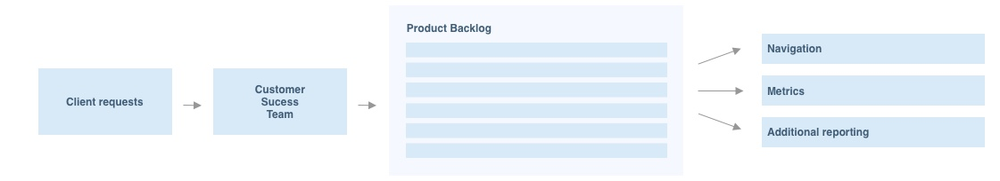
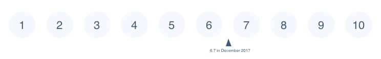
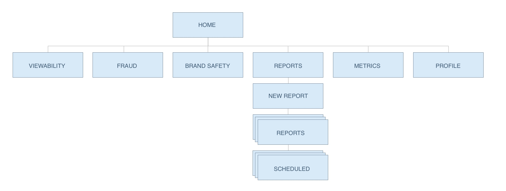
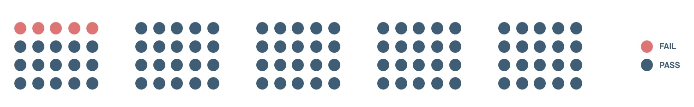

We kicked off the research with a usability heuristic analysis. I used Norman & Nielsen rules of thumb for good interaction design to learn more about current UI and understand where its strengths and weaknesses lied. Main takeaways were:
Next step was to take a deep dive into UI Analytics. Using a combination of Pendo and Mixpanel data we've focused on the most visited and the least visited pages, interaction flows to and from the most visited pages, and also quick searches. We've investigated patterns for both internal and external users and identified potential super users to be interviewed.
As it often happens in B2B environment, it was hard to get direct and frequent access to the users. However IAS has a strong Customer Success department. Representative have well established relationships with clients, and their UI requests are based on clients needs. While urgent and simple request got addressed quickly, there was a long line of items that haven't been resolved yet. We reviewed history of requests to uncover existing needs, to prepare for in person interviews.
Prior to the redesign we've sent out a short survey to existing user base asking to rate current experience and describe their biggest pain points.
To get alignment around the business needs and timelines we interviewed all the major stakeholders including Product, Sales, Marketing, Customer Success and Engineering teams.
To kick the interviews off I've leveraged a large group of internal users. I've had multiple conversations around current platform usability with Customer Success team.
Internal client interviews were focused around the needs that the old platform wasn't addressing, pain points, goals & motivations.

Ideation included multiple collaborative workshops with Product, Design, Engineering and Sales teams. For this project, we chose to start with user-centered design workshop, card sorting exercise and a Design Studio workshop.

Based on card sorting results and I've proposed a new site structure. New structure for "Publisher" platform resembled the rest of IAS's platform, making seamless experience for existing users. There was also a direct tie to the clients KPIs.
Next step was to create user flows and rough wires. Working closely with Product and Engineering we focused on finding a middle ground between design and system performance.


After several quick iterations, I've built a high fidelity interactive prototype using Sketch and Invision.

Even though we often opted out for gorilla testing in the early stages, once we had a high fidelity prototypes, we conducted a task-based usability testing.
After multiple design iterations, we were ready to kick off development work. I've worked side by side with engineering to create Epics, User Stories, Acceptance Criteria, as well as address any design edge cases or additional scenarios throughout the whole implementation process.
Even with a MVP functionality, platform experienced 23% increase in daily page views and Overall user rating increased from 6.7 to 7.6 out of 10. In addition, 35+ backlog issues got resolved.

Once MVP was implemented, our priorities were switched to gathering feedback, tracking UI usage and prioritizing UX improvements for the next phase.

There are many more features that need to be added to the new platform before IAS will be able to sunset the old platform. Applying design thinking to the process helped us to get the whole team aligned around user needs and make the first step a lots faster and easier.
Even small UI improvements helped to significantly increase UX KPIs. But perhaps the most valuable result was existing clients feedback, that they felt "heard" and "part of the process" which is a solid step toward a stronger partnership.